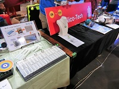
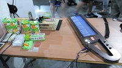
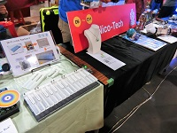
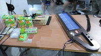

Archives
Maker Faire Taipei 2017

Maker Faire Berlin 2015

Maker Faire Taipei 2015

Nico-Tech is a Society for the engineering on Nico-Video (ニコニコ動画), which is a Japanese video-sharing service like YouTube.
Nico-Video has various user groups and one of which is Nico-Tech, a group which develops robots, crafts, and various electronic things and shares their development process over the internet.
Nico-Tech as an exhibiting group at Maker Faire is actually a part of this user group on Nico-Video, however they are organizing independently the team Nico-Tech.
Nico-Tech（ニコニコ技術部）とは、
動画サイト「ニコニコ動画」に投稿されているものづくり系動画の総称（カテゴリ）であり、
その構成員（ニコニコ技術部員）は、ニコニコ動画に自分の作ったものを動画作品として投稿しているユーザーたちです。
ニコニコ技術部と呼ばれる作品に制限はなく、各個人が思い思いの動画を投稿していますが、中でも特にニコニコ技術部の作品として代表的なものが、
『VOCALOID2 初音ミクに「Ievan Polkka」歌わせてみた』を再現した「ネギ振り」や
【初音ミク】Innocence【3DPV】の影響を受けて開発された「あの楽器」と言った初音ミクの動画を技術で再現した作品群です。
Maker Faireに出展しているNico-Techは、この動画投稿者の有志が中心になって、自主的に集まって結成した展示グループです。

